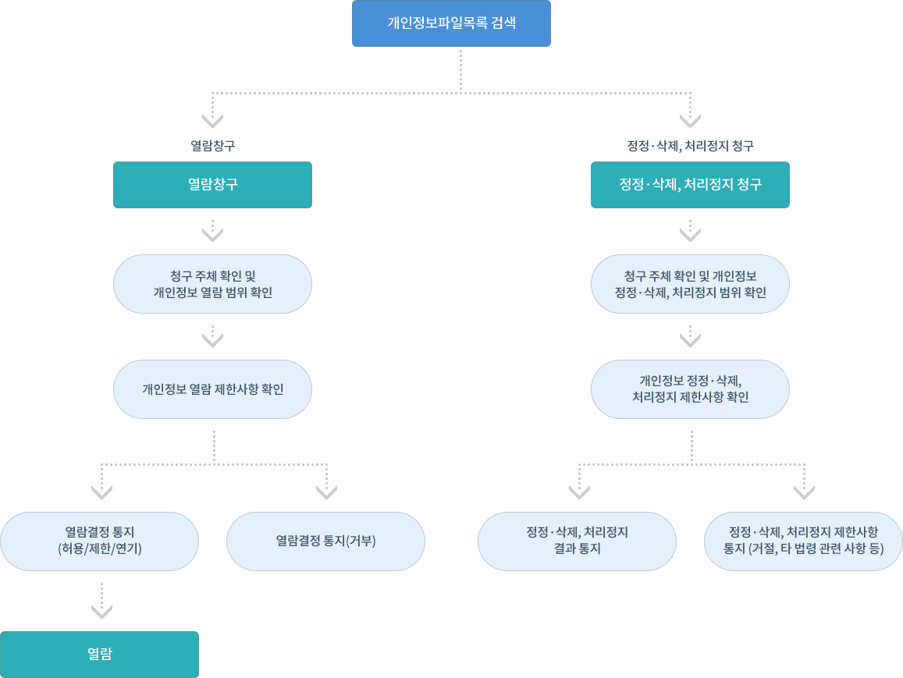

시설 한 눈에
시설 한 눈에 챗봇
챗봇 나의
나의 이용
이용 손말
손말개인정보처리방침
제1조(개인정보의 처리 목적)
- ① 서울시는 대시민 서비스 제공 및 민원처리, 소관업무 수행 등의 목적으로 필요에 의한 최소한으로 개인정보를 처리하고 있습니다.
- ② 제1항에 대한 사항은 각 기관·실·국·본부·사업소(이하 ‘기관’)에서 운영하는 소관 홈페이지에 게재하여 정보주체가 확인할 수 있도록 안내하고 있습니다.
- ③ 개인정보 유출사고 시「개인정보의 안전성 확보조치 기준(행정안전부 고시)」에 의거, 관련 모든 책임은 유출 기관의 개인정보 관리책임자(부서장 또는 소속 기관장) 및 개인정보 취급자(단위업무별 담당자)에게 있습니다.
제2조(개인정보의 처리 및 보유기간)
- ① 서울시에서 처리하는 개인정보는 수집·이용 목적으로 명시한 범위 내에서 처리하며, 개인정보보호법 및 관련 법령에서 정하는 보유기간을 준수하여 이행하고 있습니다.
-
②
서울시가 개인정보 보호법 제32조에 따라 등록·공개하는 개인정보파일은 다음과 같습니다.
구분, 개인정보파일명, 운영근거/처리목적, 보유기간 등의 정보를 나타내는 표 구분 개인정보파일명 운영근거/처리목적 보유기간 대표 서울시홈페이지 통합회원 파일 홈페이지 서비스 이용 및 회원관리, 불량회원의 부정이용 방지, 비인가 사용방지, 민원 신청 및 처리 등 2년 -
③
서울시에서 운영하는 홈페이지 및 관련 서비스의 개인정보의 처리 및 보유기간에 대해서는 ‘개인정보보호 종합포털’에서 열람할 수 있습니다.
※ 행정안전부 개인정보보호 종합포털(www.privacy.go.kr) → 민원마당 → 개인정보의 열람 등 요구 → 개인정보파일 목록 검색 → 기관명에 “서울특별시”로 조회
* [행정안전부 개인정보보호 종합포털] 서울시 개인정보파일 목록 (클릭)
제3조(개인정보의 제3자 제공에 관한 사항)
-
①
서울시가 처리하고 있는 개인정보는 이용자의 동의 없이는 제3자에게 제공하지 않습니다. 제1항에도 불구하고 다음 각 호에 해당하는 경우에는
정보주체 또는 제3자의 이익을 부당하게 침해할 우려가 있을 때를 제외하고는 개인정보를 목적 외의 용도로 이용하거나 이를 제3자에게 제공할 수
있습니다.
- 1. 정보주체로부터 별도의 동의를 받은 경우
- 2. 다른 법률에 특별한 규정이 있는 경우
- 3. 정보주체 또는 그 법정대리인이 의사표시를 할 수 없는 상태에 있거나 주소불명 등으로 사전 동의를 받을 수 없는 경우로서 명백히 정보주체 또는 제3자의 급박한 생명, 신체, 재산의 이익을 위하여 필요하다고 인정되는 경우
- 4. 개인정보를 목적 외의 용도로 이용하거나 이를 제3자에게 제공하지 아니하면 다른 법률에서 정하는 소관 업무를 수행할 수 없는 경우로서 보호위원회의 심의·의결을 거친 경우
- 5. 조약, 그 밖의 국제협정의 이행을 위하여 외국정부 또는 국제기구에 제공하기 위하여 필요한 경우
- 6. 범죄의 수사와 공소의 제기 및 유지를 위하여 필요한 경우
- 7. 법원의 재판업무 수행을 위하여 필요한 경우
- 8. 형(形) 및 감호, 보호처분의 집행을 위하여 필요한 경우
-
②
제1항에 대한 사항은 각 기관에서 운영하는 소관 홈페이지에 게재하여 정보주체가 확인할 수 있도록 안내하고 있습니다.
※ 서울시 개인정보의 제3자 제공에 대한 개인정보파일 세부내역 (클릭)
제4조(개인정보 처리의 위탁에 관한 사항)
-
①
서울시는 원활한 개인정보 업무처리를 위하여 다음과 같이 개인정보 처리업무를 위탁하고 있습니다.
※ 서울시 개인정보 처리 위탁 개인정보파일 세부내역 (클릭)
연번, 개인정보파일명, 위탁하는 업무의 내용 등의 정보를 나타내는 표 연번 개인정보파일명 위탁하는 업무의 내용 위탁받는 자 비 고 1 서울시홈페이지
통합회원파일시스템 유지보수 및 운영 (주)피씨엔 2 실명확인(나이스 I-PIN 인증, 휴대폰본인인증) 나이스평가정보(주) 3 실명확인(공공 I-PIN 인증) 행정안전부 4 음성 인증 (주)싱크에이티 - ② 서울시는 위탁계약 체결 시, 개인정보 보호법 제25조에 따라 위탁업무 수행목적 외 개인정보 처리금지, 기술적·관리적 보호조치, 재위탁 제한, 수탁자에 대한 관리·감독, 손해배상 등 책임에 관한 사항을 계약서 등 문서에 명시하고, 수탁자가 개인정보를 안전하게 처리하는 지를 감독하고 있습니다.
- ③ 위탁업무의 내용이나 수탁자가 변경될 경우에는 지체없이 본 개인정보 처리방침을 통하여 공개하도록 하겠습니다.
제5조(정보주체와 법정대리인의 권리·의무 행사방법)
- ① 정보주체(만 14세 미만인 경우에는 법정대리인을 말함)는 서울시에 대해 언제든지 개인정보 열람·정정·삭제·처리정지 요구 등의 권리를 행사할 수 있습니다.
- ② 제1항에 따른 권리 행사는 개인정보 보호법 시행령 제41조1항에 따라 서면, 전자우편, 모사전송(FAX) 등을 통하여 할 수 있으며, 서울시는 이에 대해 지체없이 조치하겠습니다.
- ③ 제1항에 따른 권리 행사는 정보주체의 법정대리인이나 위임을 받은 자 등 대리인을 통하여 하실 수 있습니다. 이 경우 개인정보 보호법 시행규칙 별지 제11호 서식에 따른 위임장을 제출하여야 합니다.
- ④ 개인정보 열람 및 처리정지 요구는 개인정보 보호법 제35조제4항, 제37조제2항에 의하여 정보주체의 권리가 제한될 수 있습니다.
- ⑤ 개인정보의 정정 및 삭제 요구는 다른 법령에서 그 개인정보가 수집 대상으로 명시되어 있는 경우에는 그 삭제를 요구할 수 없습니다.
-
⑥
서울시는 정보주체 권리에 따른 열람의 요구, 정정·삭제의 요구, 처리정지의 요구 시 열람 등 요구를 한 자가 본인이거나 정당한 대리인인지를
확인하고 있습니다.
* [개인정보 보호법 시행규칙 별지 제 8호] 개인정보 열람 요구서 (클릭)
* [개인정보 보호법 시행규칙 별지 제11호] 위임장 (클릭)
- 개인정보 파일 목록 검색
- 열람청구
- 열람청구
- 청구 주체 확인 및 개인정보 열람 범위 확인
- 개인정보 열람 제한사항 확인
- 열람 결정통지(허용/제한/연기) 또는 열람결정 통지(거부)
- 열람
-
- 정정, 삭제, 처리정지 청구
- 정정, 삭제, 처리정지 청구
- 청구 주체 확인 및 개인정보 정정, 삭제, 처리정지 범위 확인
- 개인정보 정정, 삭제, 처리정지 제한사항 확인
- 정정, 삭제 처리정지 결과 통지 또는 정정, 삭제, 처리정지 제한사항 통지(거절, 타 법령 관련사항 등)
- 개인정보 파일 목록 검색
제6조(처리하는 개인정보 항목)
- ① 서울특별시에서 처리하는 개인정보는 소관업무 및 법령에서 정한 최소한의 개인정보만을 처리하며, 자세한 사항은 각 기관에서 운영하는 소관 홈페이지에 게재하여 정보주체가 확인할 수 있도록 안내하고 있습니다.
-
②
이용자(정보주체와 만 14세 미만인 경우에는 법정 대리인을 말함)에게 회원가입 시 개인정보 수집·이용 동의를 받고 있습니다.
- 1. 회원 가입 시에 “이름, 생년월일, 성별, 중복가입확인정보(DI)”를 실명 인증을 위해 수집
-
2.
생년월일이 만 14세 미만 아동일 경우에는 법정대리인의 실명인증(I-PIN 또는 휴대폰 인증)
※ 정보주체가 만14세 미만 아동의 경우 본인 이외 법정대리인의 실명인증이 필요하며, 아래에 명시된 항목 이외 실명인증을 위해 입력한 개인정보는 별도 저장하지 않습니다.
처리목적, 회원구분, 필수항목, 선택항목 등의 정보를 나타내는 표 처리목적 회원구분 필수항목 선택항목 실명인증정보 수집정보 수집정보 홈페이지
회원가입 및
관리일반회원
(만14세 이상
내국인)이름
생년월일
성별
중복가입확인정보(DI)아이디
비밀번호
비밀번호 변경열쇠(질문/답)
생년월일
연락처(집/직장/휴대폰 중 택일)
거주지 시/도, 이메일주소메일수신설정
시립미술관멤버십외국인회원
(국내거주)어린이회원
(만14세 미만
내국인)이름
생년월일
성별
중복가입확인정보(DI)
<법정대리인>
이름
성별
생년월일
중복가입확인정보(DI)아이디
비밀번호
비밀번호 변경열쇠(질문/답)
생년월일
연락처(집/직장/휴대폰 중 택일)
거주지 시/도, 이메일주소메일수신설정
시립미술관멤버십기업회원 기업명
사업자등록번호
대표자명아이디
비밀번호
비밀번호 변경열쇠(질문/답)
생년월일
연락처(집/직장/휴대폰 중 택일)
거주지 시/도, 이메일주소메일수신설정
시립미술관멤버십
제7조(개인정보의 파기에 관한 사항)
- ① 서울시는 원칙적으로 개인정보의 보유기간이 경과, 처리목적 달성 등 개인정보가 불필요하게 되었을 때에는 지체 없이 해당 개인정보를 파기합니다. 다만, 다른 법률에 따라 보존하여야 하는 경우에는 그러지 아니한다. 파기의 절차, 기한 및 방법은 다음과 같습니다.
- ② 정보주체로부터 동의 받은 개인정보 보유기간이 경과하거나 처리목적이 달성되었음에도 불구하고 다른 법령에 따라 개인정보를 계속 보존하여야 하는 경우, 해당 개인정보(또는 개인정보파일)을 별도의 데이터베이스(DB)로 옮기거나 보관장소를 달리하여 보존합니다.
-
③
개인정보 파기의 절차 및 방법은 다음과 같습니다.
-
1.
파기절차
- - 서울시는 파기하여야 하는 개인정보(또는 개인정보파일)에 대해 개인정보 파기계획을 수립하여 파기합니다.
- - 서울시는 파기 사유가 발생한 개인정보(또는 개인정보파일)을 선정하고, 서울시의 개인정보 보호책임자의 승인을 받아 개인정보(또는 개인정보파일)을 파기합니다.
-
2.
파기방법
- - 전자적 파일 형태인 경우 : 복원이 불가능한 방법으로 영구삭제
- - 전자적 파일의 형태 외의 기록물, 인쇄물, 서면, 그 밖의 기록매체인 경우 : 파쇄 또는 소각
-
1.
파기절차
제8조(개인정보의 안전성 확보조치에 관한 사항)
-
①
서울시는 개인정보의 안전성 확보를 위해 다음과 같은 조치를 취하고 있습니다.
-
1.
관리적 조치
- - 「개인정보의 안전성 확보조치 기준」에 의거하여, 서울특별시 내부관리계획 수립 및 시행
- - 개인정보 취급자는 반드시 필요한 인원에 한하여 지정·관리 하며, 정기적인 교육을 시행
-
2.
기술적 조치
- - 개인정보를 처리하는 데이터베이스시스템에 대한 접근권한의 부여, 변경, 말소를 통해 개인정보에 대한 접근을 통제 및 침입차단시스템과 침입방지시스템을 이용해 외부로부터의 무단 접근을 통제
- - 개인정보처리시스템에 접속한 기록(웹 로그, 요약정보 등)을 최소 1년 이상 보관, 관리
- - 이용자의 개인정보는 암호화 되어 저장 및 관리하며, 중요한 데이터는 저장 및 전송 시 암호화하여 사용하는 등의 별도 보안기능을 사용
- - 해킹이나 컴퓨터 바이러스 등에 의한 개인정보 유출 및 훼손을 막기 위하여 보안프로그램을 설치하고 주기적인 갱신·점검을 하여야 하며 외부로부터 접근이 통제된 구역에 시스템을 설치하고 기술적, 물리적으로 감시 및 차단
-
3.
물리적 조치
- - 개인정보를 보관하고 있는 개인정보시스템의 물리적 보관 장소를 별도(서울시 데이터센터)로 두고 이에 대해 출입통제 절차를 수립·운영
-
1.
관리적 조치
제9조(개인정보 자동 수집 장치의 설치∙운영 및 거부에 관한 사항)
- ① 서울시는 이용자에게 개별적인 맞춤서비스를 제공하기 위해 이용정보를 저장하고 수시로 불러오는 ‘쿠키(cookie)’를 사용합니다.
-
②
쿠키는 웹사이트를 운영하는데 이용되는 서버가 이용자의 컴퓨터 브라우저에게 보내는 소량의 정보이며 이용자의 PC 컴퓨터 내의 하드디스크에
저장되기도 합니다.
- 1. 쿠키의 사용목적 : 이용자가 방문한 각 서비스와 웹사이트에 대한 방문 및 이용형태, 보안접속 여부 등을 파악하여 이용자에게 최적화된 정보 제공을 위해 사용됩니다.
-
2.
쿠키의 설치·운영 및 거부 : 이용자는 쿠키 저장을 다음과 같이 거부할 수 있습니다.
※ 웹브라우저 상단의 [도구] → [인터넷 옵션] → 개인정보 메뉴의 [고급] → 쿠키 차단 설정
- 3. 쿠키 저장을 거부할 경우 맞춤형 서비스 이용에 어려움이 발생할 수 있습니다.
제10조(권익침해 구제방법)
-
①
정보주체는 아래와 같이 개인정보 침해에 대한 피해구제, 상담 등을 문의할 수 있습니다.
<아래의 기관은 서울시와는 별개의 기관으로서, 자체적인 개인정보 불만처리, 피해구제 결과에 만족하지 못하시거나 보다 자세한 도움이 필요하시면 문의하여 주시기 바랍니다>
구분, 기관명, 전화번호 비고등의 정보를 나타내는 표 구분 기관명 전화번호 비고 개인정보 침해신고센터 개인정보 침해신고센터 국번 없이 118 privacy.kisa.or.kr/ 개인정보분쟁조정위원회 개인정보분쟁조정위원회 1833-6972 .kopico.go.kr 사이버범죄수사단 대검찰청 국번 없이 1301 spo.go.kr/ 사이버안전국 경찰청 국번 없이 182 police.go.kr -
②
개인정보 보호법 제35조(개인정보의 열람), 제36조(개인정보의 정정·삭제), 제37조(개인정보의 처리정지 등)의 규정에 의한 요구에 대하여
공공기관의 장이 행한 처분 또는 부작위로 인하여 권리 또는 이익의 침해를 받은 자는 행정심판법이 정하는 바에 따라 행정심판을 청구할 수
있습니다.
※ 행정심판에 대해 자세한 사항은 중앙행정심판위원회(http://www.simpan.go.kr/) 참고
제11조(개인정보 열람청구를 접수·처리하는 부서)
-
①
정보주체는 개인정보 보호법 제35조에 따른 개인정보의 열람 청구를 아래의 부서에 할 수 있고, 서울시는 정보주체의 개인정보 열람청구가 신속하게
처리되도록 노력하겠습니다.
개인정보 열람청구 접수·처리부서- - 부 서 명 : 정보시스템담당관(개인정보보호팀)
- - 담 당 자 : 오지성 주무관
- - 연 락 처 : ☎ 02-2133-2971 또는 privacy@seoul.go.kr
-
②
정보주체는 제1항의 열람청구 접수․처리부서 이외에, 행정안전부 ‘개인정보보호 종합포털’ 웹사이트를 통해 개인정보 열람청구를 할 수 있습니다.
※ 행정안전부 개인정보보호 종합포털(www.privacy.go.kr) → 민원마당 → 개인정보의 열람 등 요구
(휴대폰 또는 공공아이핀을 통한 실명인증 필요)
제12조(개인정보 보호책임자에 관한 사항)
| 연번 | 구분 | 부서명 | 성명 | 직급 | 개인정보 보호 담당부서 및 연락처 |
|---|---|---|---|---|---|
| 1 | 개인정보 보호책임자 | 스마트도시정책관 | 이원목 | 국 장 | * 정보시스템담당관(개인정보보호팀) - 전 화 : 02-2133-2971~2 - 이메일 : privacy@seoul.go.kr - F A X : 02-2133-1071 |
| 2 | 개인정보 보호담당자 | 정보시스템담당관 | 오지성 | 주무관 |
제13조(개인정보 처리방침의 변경)
- ① 이 개인정보 처리방침은 2020년 6월 11일부터 적용합니다.
- ② 이전의 개인정보 처리방침은 아래에서 확인에서 확인할 수 있습니다.
- 2011. 11. 21. ~ 2012. 04. 03. (클릭 서울특별시 개인정보 처리방침)
- 2012. 04. 04. ~ 2012. 08. 19. (클릭 서울특별시 개인정보 처리방침)
- 2012. 08. 20. ~ 2013. 04. 14. (클릭 서울특별시 개인정보 처리방침)
- 2013. 04. 15. ~ 2018. 03. 31. (클릭 서울특별시 개인정보 처리방침)
- 2018. 04. 01. ~ 2019. 04. 08. (클릭 서울특별시 개인정보 처리방침)
- 2019. 04. 09. ~ 2020. 06. 10. (클릭 서울특별시 개인정보 처리방침)